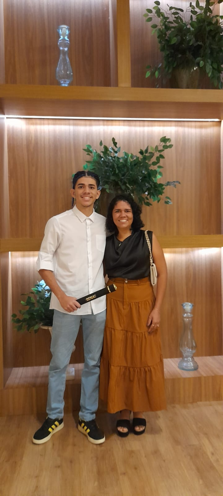
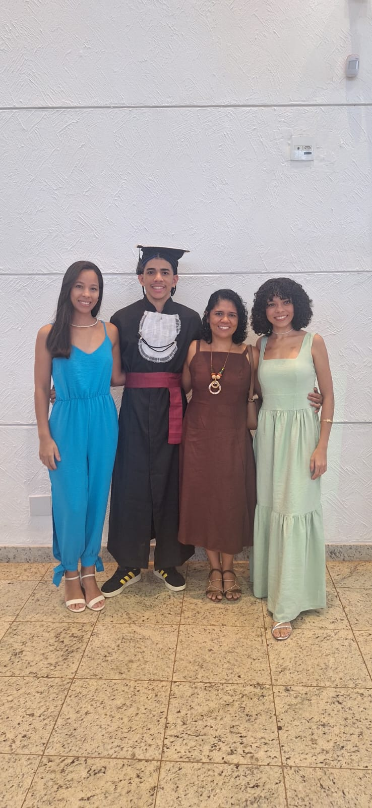
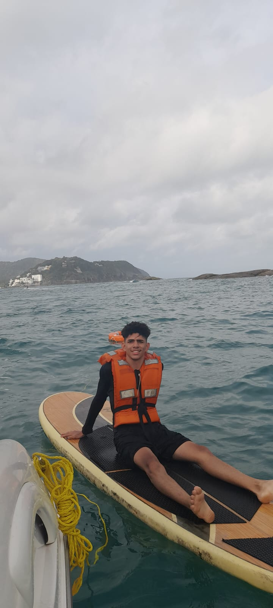

SOBRE O RUAN
MARCELO


Quem sou ?
Sou Ruan Marcelo, natural de Ribeirão Preto, no interior de São Paulo. Concluí o Ensino Fundamental e o Ensino Médio pela Rede SESI e o curso Técnico em Desenvolvimento de Sistemas pelo SENAI.
O que eu faço?
Sou um programador Full Stack, com conhecimentos em diversas áreas do desenvolvimento de software, incluindo banco de dados, back-end e front-end.